Human Brain Data
INCF - Brains United Meeting
August 2019
Samir Das
Associate Director of Technology
McGill Centre for Integrative Neuroscience
Montreal Neurological Institute

|

|

|

Mapping Issues
| 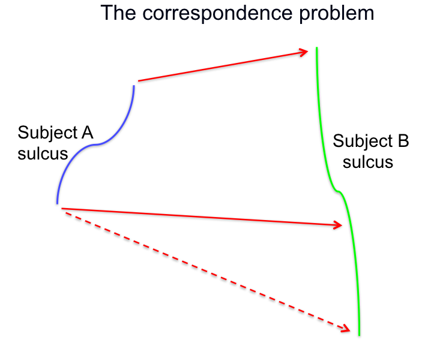 | 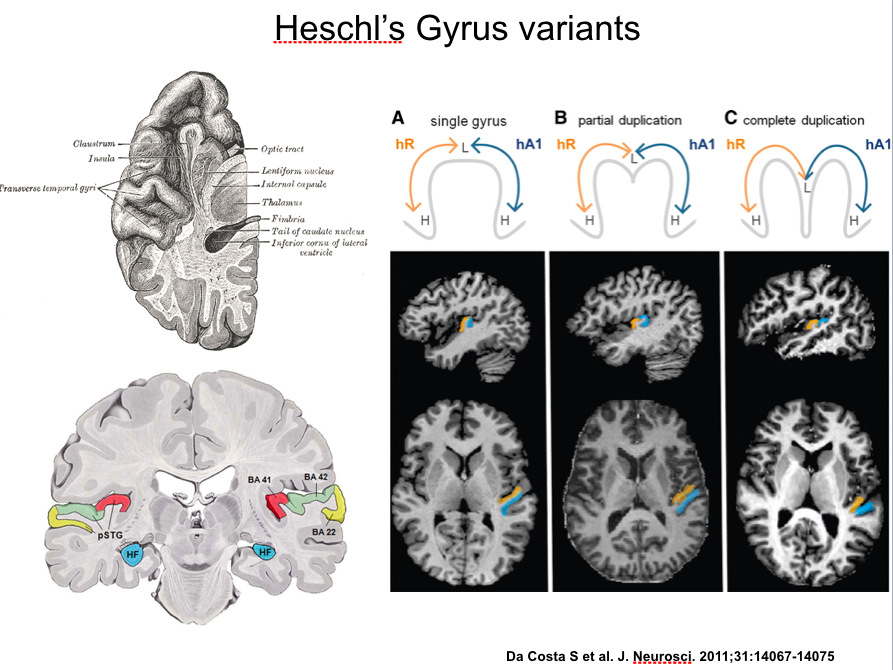 |
How available is the data?
| 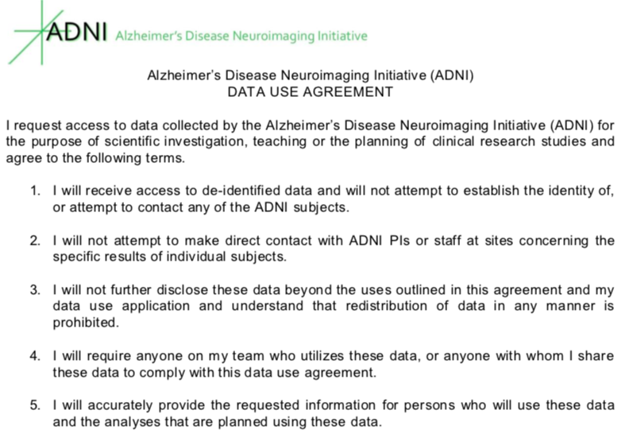 | 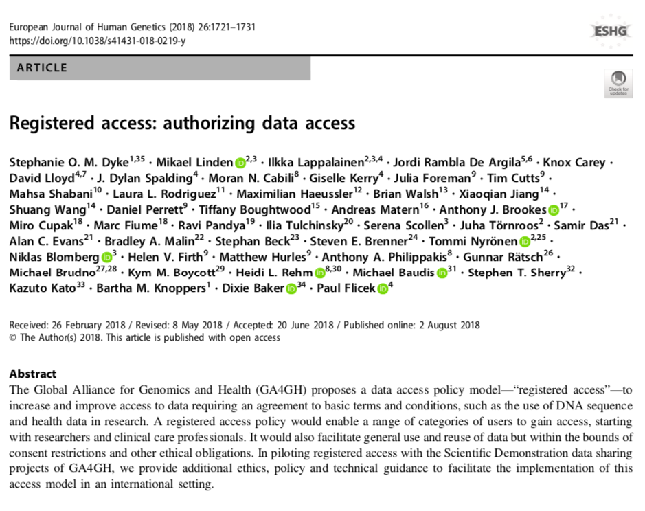 |

|
Data Use Agreements |
Registered Access |
Open Access |
How raw is the data?
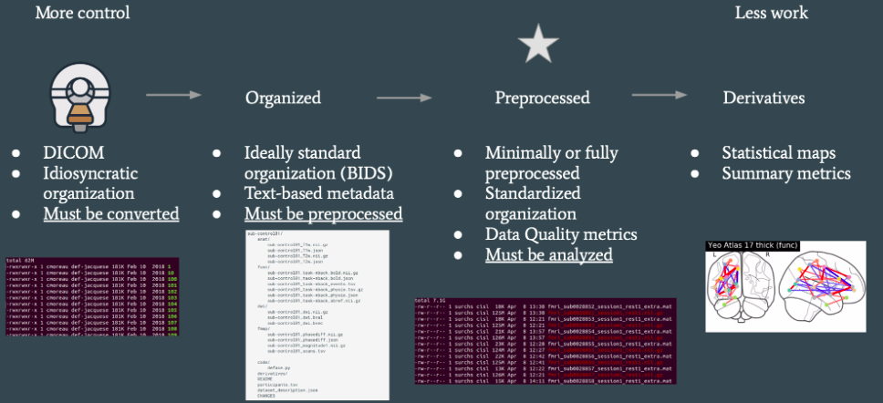Quality
| 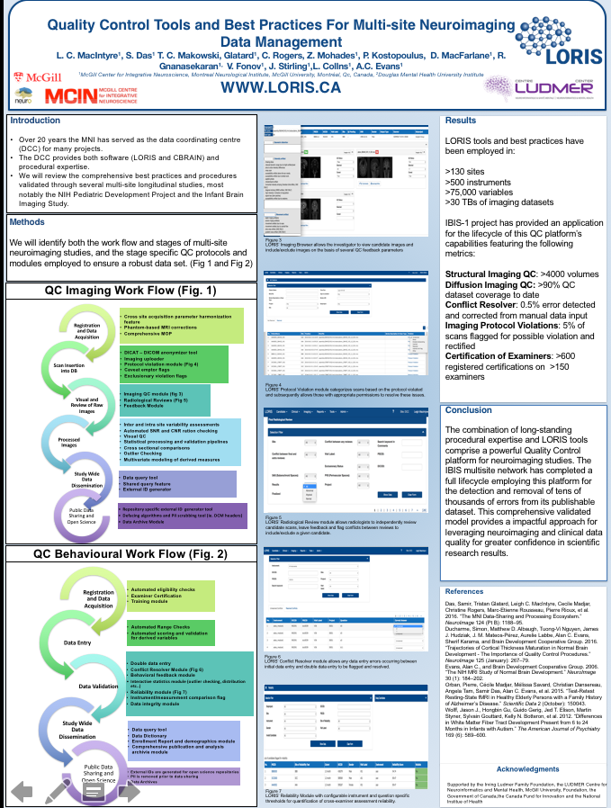 |

Resolution Completeness Artifact-free Well documented Provenance |

Atlases and Templates
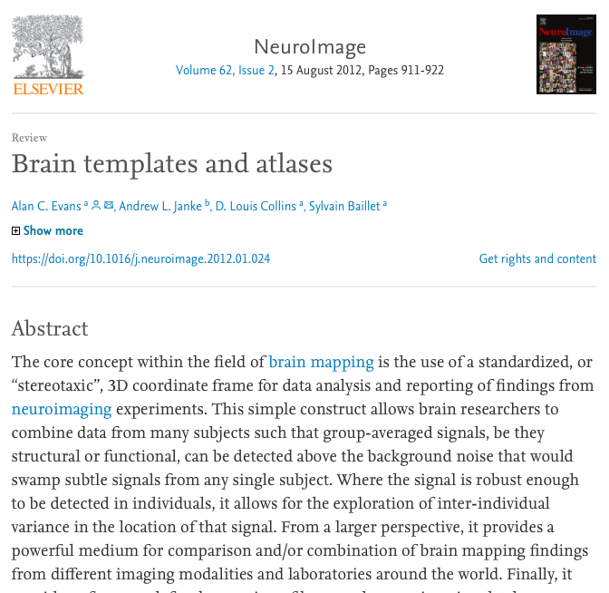

Large Scale Datasets

More Manageable Datasets


|
|
|


|

|
|

|
The BigBrain is the digitized reconstruction of 7404 hi-res coronal histological sections (20 microns isotropic). It is the brain of a 65 year-old man with no neurological or psychiatric diseases in clinical records at time of death.  |

|
BigBrain - high resolution reference brain
Multimodal integration into an anatomically realistic standard space
Years of development
20 micron resolution
7404 histological slices
1 Terabyte dataset
Deep Learning
Other Datasets worth mentioning
| 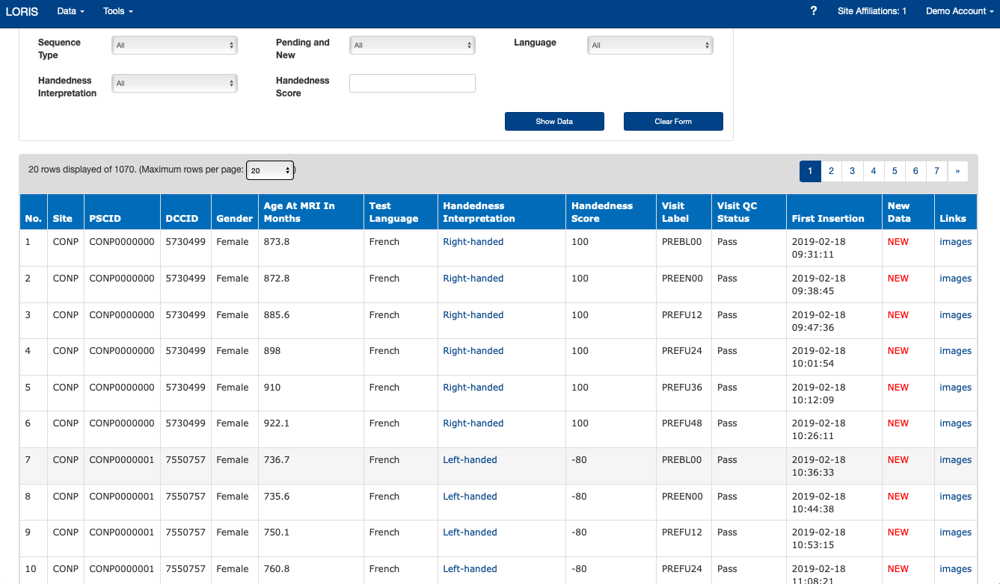 | 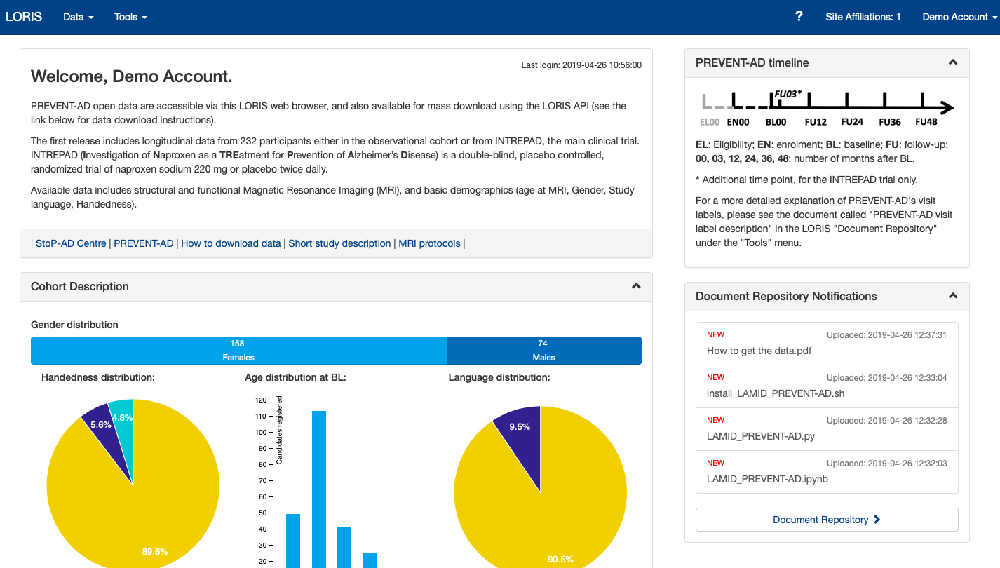 |

Open iEEG atlas
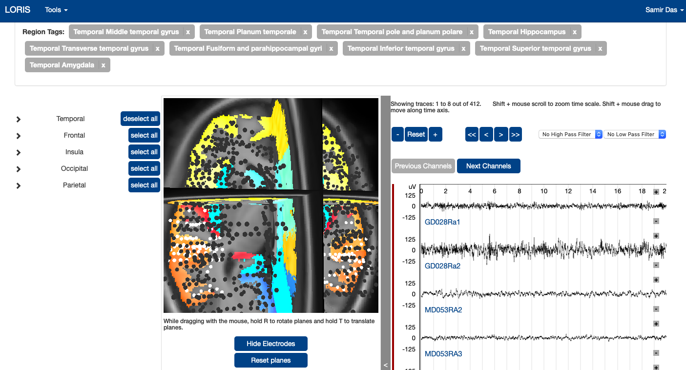| 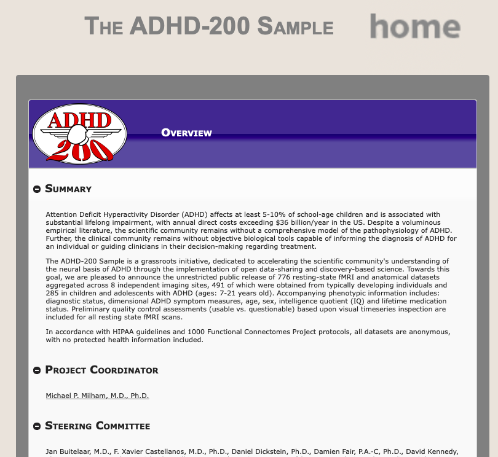 | 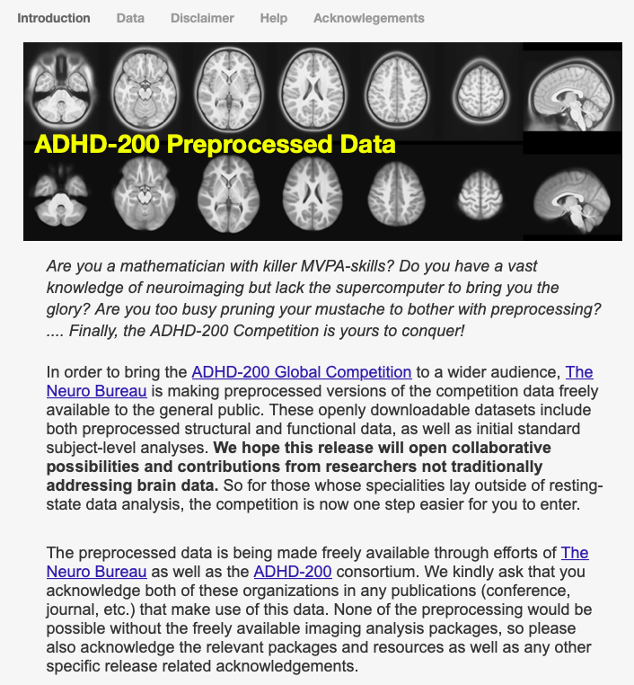 |
Where to find data?
| 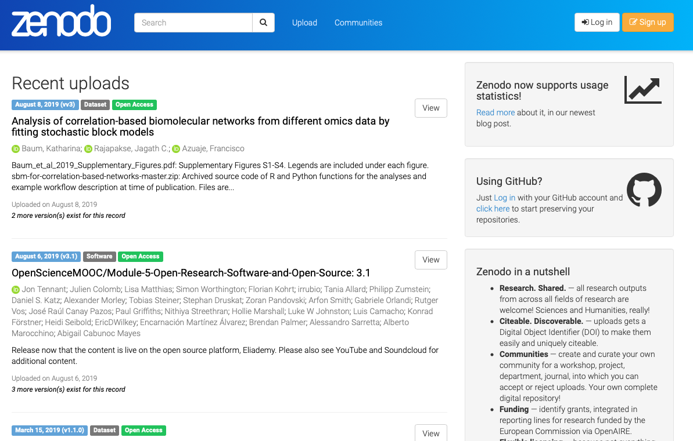 |

|
Thank you!Acknowledgements: Alan Evans, JB Poline, Shawn Brown, Louis Collins, Vladimir Fonov, Pierre Rioux, Claude Lepage, Tristan Glatard, Jason Karamchandani, Cecile Madjar, Ted Fon, John Brietner, and one of my favourites: Pierre Bellec! LORIS team on left |